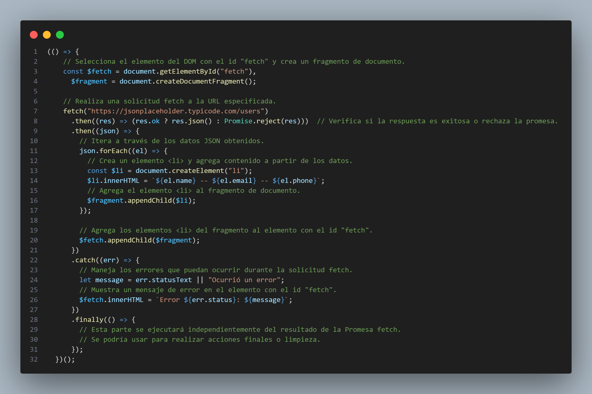

AJAX: Asynchronous JavaScript And XML
AJAX significa "JavaScript Asíncrono y XML" en español. Es una técnica de programación que permite a las páginas web comunicarse con el servidor en segundo plano, sin tener que recargar toda la página. Esto permite cargar contenido y datos de manera asincrónica, lo que resulta en una experiencia de usuario más fluida y rápida. Aunque el término incluye "XML" en su nombre, en realidad, se pueden usar diversos formatos de datos, como JSON, en lugar de XML en la comunicación entre el cliente y el servidor.
Imagina que estás en un restaurante y decides pedir comida para llevar. En lugar de sentarte en la mesa y esperar a que la comida esté lista, decides aprovechar tu tiempo haciendo otras cosas mientras esperas. Aquí está cómo se relaciona con AJAX.
- Solicitud Asincrónica: En lugar de quedarte sentado en la mesa (como lo haría una página web tradicional), AJAX te permite enviar una solicitud al cocinero (servidor) para preparar tu comida (datos) en segundo plano, mientras tú sigues haciendo otras cosas.
- espuesta Eficiente: Una vez que la comida está lista, el cocinero te avisa y recoges tu comida para llevar. De manera similar, cuando el servidor tiene los datos listos, te los envía de vuelta a tu página web.
- Sin Espera: Mientras el cocinero trabaja en tu comida, no tienes que quedarte sentado inactivo. Puedes seguir revisando el menú, charlando con amigos o realizando otras actividades. Con AJAX, tu página web puede mostrar información o interactuar con el usuario sin tener que esperar a que se cargue todo el contenido nuevamente.
- Actualizaciones Instantáneas: Imagina que decides agregar un postre a tu pedido. En lugar de volver a enviar todo el pedido, solo agregas el postre. Con AJAX, puedes actualizar partes específicas de tu página web sin recargar toda la página. Esto es similar a cómo puedes modificar tu pedido sin reiniciar todo el proceso.
Objeto XMLHttpRequest
El objeto XMLHttpRequest es una parte fundamental en el funcionamiento de AJAX en JavaScript. Te proporciono un ejemplo básico de cómo usar XMLHttpRequest para realizar una solicitud HTTP asíncrona y obtener datos del servidor:
API Fetch
La API Fetch es una interfaz en JavaScript que proporciona un método moderno y más flexible para realizar solicitudes de red (HTTP) desde el navegador. Fue introducida como una alternativa a las técnicas tradicionales de realizar peticiones AJAX utilizando el objeto XMLHttpRequest. La API Fetch simplifica la forma en que se manejan las solicitudes y las respuestas, y también es compatible con Promesas, lo que la hace más poderosa y fácil de usar.
- Sintaxis más simple: La API Fetch utiliza una sintaxis más sencilla y basada en Promesas para realizar solicitudes y manejar respuestas.
- Manejo de Promesas: Las Promesas son una parte integral de la API Fetch. Esto facilita el manejo de respuestas asíncronas y la implementación de lógica para manejar tanto casos exitosos como errores.
- Soporte para encabezados y métodos personalizados: Puedes personalizar las solicitudes HTTP utilizando diferentes métodos (GET, POST, PUT, DELETE, etc.) y configurar encabezados personalizados para enviar y recibir información adicional.
- Respuestas estructuradas: La API Fetch devuelve respuestas en formato de objeto Response, que incluye información sobre el estado de la respuesta, encabezados y el cuerpo de la respuesta.
- Soporte para Blob, ArrayBuffer, etc.: Fetch permite trabajar con varios tipos de datos binarios, como imágenes o archivos, utilizando objetos como Blob o ArrayBuffer.
En este ejemplo, se hace una solicitud GET a la URL "https://api
.example.com/data". Si la respuesta no es exitosa (código de estado no está en el rango 200-299), se lanza un error. Luego, la respuesta se analiza como JSON y se manejan los datos recibidos. Si hay algún error en el proceso, se captura y maneja en el bloque catch.
API Fetch + Async-Await
Puedes utilizar la combinación de la API Fetch con async/await para hacer que tu código sea aún más legible y fácil de comprender. Aquí tienes un ejemplo de cómo hacer una solicitud GET utilizando async/await junto con la API Fetch
Librería Axios
La API Fetch es una interfaz moderna de JavaScript para realizar solicitudes de red desde el navegador.
Proporciona un método más sencillo para manejar respuestas asincrónicas y utiliza Promesas para una programación más estructurada.
Puede manejar diferentes tipos de solicitudes (GET, POST, etc.) y personalizar encabezados y datos.
Las respuestas se pueden analizar y manipular para mostrar contenido en la página.
- Sintaxis simplificada: Axios proporciona métodos específicos para diferentes tipos de solicitudes (GET, POST, PUT, DELETE, etc.), lo que hace que el código sea más limpio y fácil de entender.
- Interceptores de solicitud y respuesta: Puedes configurar interceptores para manejar globalmente las solicitudes antes de enviarlas y las respuestas antes de que lleguen a tu código.
- Cancelación de solicitudes: Axios permite cancelar solicitudes en curso, lo que puede ser útil en situaciones donde el usuario interactúa y cambia de página o acción.
- Conversión automática de datos: Axios convierte automáticamente los datos en JSON y permite configurar la conversión de otros tipos de datos.
- Compatibilidad con Promesas: Axios utiliza Promesas para manejar las respuestas y los errores, lo que hace que el código sea más estructurado y fácil de trabajar.
Librería Axios + Async-Await
La librería Axios es una herramienta de JavaScript ampliamente utilizada para realizar solicitudes HTTP desde el navegador o entornos Node.js. Permite hacer peticiones a servidores y APIs para obtener datos, enviar datos, actualizar información, eliminar contenido, entre otras operaciones, a través de los métodos HTTP como GET, POST, PUT y DELETE.
Por otro lado, async/await es una característica de JavaScript que proporciona una forma más concisa y legible de manejar el código asíncrono. La combinación de Axios con async/await facilita el proceso de realizar solicitudes HTTP y trabajar con las respuestas en código más estructurado y fácil de entender.